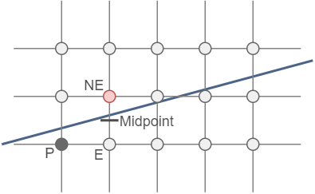

Rasterization
In the Rasterization Stage, the main goal is the convertion of primitives to an image of pixels. There are multiple ways to approximate a shape and translate it to an realistic pixel image. Here we are discussing the procedure of midline algorithm. This algorithm can be implemented for multiple shapes. In this example we will discuss the shapes of a line and a circle.Midpoint Line Algorithm
Let's start with the assumption, that the slope of the line is smaller than one but none negative. For all other posibillities, the rasterized line can be mirrored and rotatet, so all possible lines are commemorated. Starting with these assumption at the start point, there are only two possible pixels which are relevant for the next pixel, for on the pixel in the east (E) and the pixel in the nort-east (NE). Between these two point the midpoint is calculated. to determine witch pixel will be used, the only test which has to performed is, if the line is above or below the middle point. If the line is above, the pixel in the north-easst corner is used, otherwise the east pixel is used. This procedure can be performed interatively, when the change of the line is descriped with its derivative, which reduces the number of multiplications.
